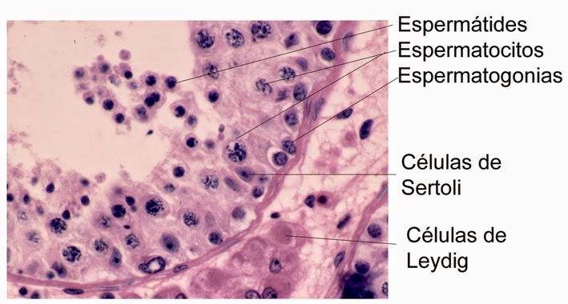
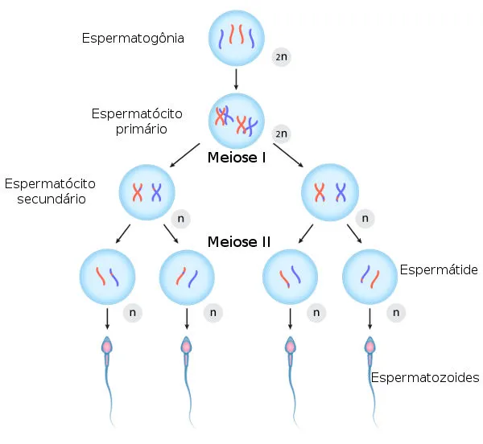
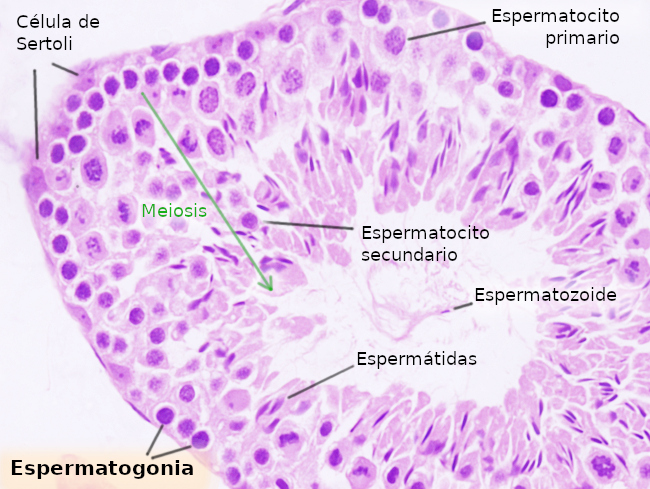
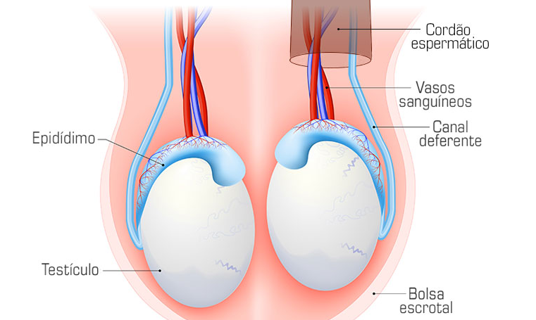

FUNÇÃO
Os testículos são as gônadas masculinas, ou seja, órgãos responsáveis pela produção de gametas. pela produção de testosterona, hormônio que auxilia na gametogênese e no desenvolvimento das características masculinas secundárias (como o desenvolvimento dos músculos e o crescimento de pelos). Os gametas masculinos são denominados espermatozóides, e o processo de produção destes é chamado de espermatogênese.
COMO FUNCIONA?
Cada testículos possui um conjunto de túbulos seminíferos, onde as células germinativas primitivas são produzidas e desenvolvidas até se tornarem espermatozóides.
Os túbulos seminíferos são envolvidos por um tecido conjuntivo contendo vasos sanguíneos e linfáticos, nervos e as células de Leydig (ou células intersticiais), cuja função é produzir e secretar testosterona via estímulos do hormônio luteinizante (LH). Cada túbulo é composto por um epitélio germinativo, onde são produzidas as células que darão origem aos espermatozóides, e uma lâmina basal.
As células mais próximas da lâmina basal são as espermatogônias (2n), que sofrem mitose e formam os espermatócitos primários (2n). Estes então sofrem meiose e formam os espermatócitos secundários (2n), que rapidamente sofrem meiose novamente e formam as espermátides, que finalmente serão maturadas até se tornarem espermatozóides. Durante a maturação, partes da espermátide podem ser desacopladas da célula, tornando-se corpos residuais. Os espermatozóides maduros ficam localizados no interior do túbulo seminífero, ou seja, no espaço interno e posteriormente serão transportados ao epidídimo para completar a maturação.
Dentro de cada túbulo, existe uma barreira hematotesticular composta pelas células de Sertoli, que promove a separação da parede do túbulo seminífero em um compartimento basal, contendo espermatogônias e espermatócitos primários, e um compartimento mais profundo que não possui contato com vasos sanguíneos e linfáticos, contendo os espermatócitos secundários e as espermátides. Desse modo, as células mais desenvolvidas ficam protegidas de substâncias que possam causar uma reação autoimune.
Na superfície das células de Sertoli, estão localizadas receptores de testosterona e hormônio folículo estimulante (FSH), que estimula a secreção de proteína ligadora de andrógenos (ABP), cuja função é promover a concentração de testosterona no compartimento adlumial, o que é necessário para a maturação dos espermatozóides. As células de Sertoli também secretam continuamente fluídos no túbulo seminífero, que são utilizados para o transporte de espermatozóides.
O que mantém os testículos suspensos no escroto é o cordão espermático, que consiste em diversos nervos, vasos sanguíneos e linfáticos.
